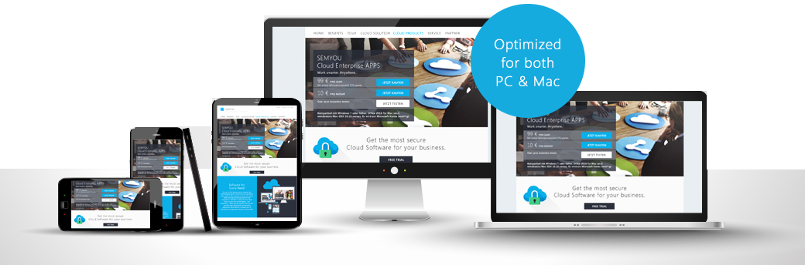

SEMYOU offers a free 30 day trial period. Register in a few simple steps to test all SEMYOU Cloud APPs.
sem.PCP
- Multi-Project Management Tool in the Cloud –„Ready to use in less than 5 minutes“
$89 PER MONTH/USER
30 Days free trial
sem.PCP
Deliver Winning
Projects
Make project management easy and
collaborate from virtually anywhere with
the right tools for project managers,
project teams and decision makers.

Get things done faster with sem.PCP project management tool!
Multiple Project Management
Manage multiple projects in a centralized location and access them from anywhere. Create and plan new projects in a few steps that will then be directly available to your project team. While working you can easily switch between projects in order to compare certain areas or to get an overview of the status of all current projects.

Project Overview
The project overview offers a central view of all projects that you have access to. You can easily access the desired project or mark it as a favorite with the use of the search function. In addition to the project name, its acronym, and picture, the central overview also displays the project status.
Dashboard
The dashboard displays a central overview of all areas of your project. Various diagrams quickly provide a visual overview of the status, progress, complexity, and content.

Newsfeeds
-Always up to date-
Project collaboration is an important factor for success in more complex projects. With the use of newsfeed functions all participants in a project can easily share and retrieve important formation. Get a comprehensive overview of important project updates or deadlines within minutes.
Project Map &
Phases
Create a clear project map of your project, which includes milestones, dependencies, and responsibilities. Each project map is divided into different phases in order to display more complex contexts more clearly.


Workstreams
Structure your projects logically into separate work areas using so called „workstreams“. A workstream can represent a group, team, department, or an external organization, for example, and serves as an interdisciplinary reference for milestones and tasks within your project.
Master-Cornerstones
In addition to project phases and workstreams, master-cornerstones (milestones) offer another method for structuring your project into work packages. Create so-called master-cornerstones for work packages that need to be completed containing relevant responsibilities for each workstream and phase.

Dependency-Browser
Easily display complex dependencies between processes. Different views allow you to visually display dependencies between your milestones in order to recognize bottlenecks or possible delays early on. Dependency chains serve as the basis and create two levels into the past and the future.
Management Reporting
Create management reports for your project with ease and archive them in an audit compliant manner. The management reporting module allows you to easily create a status report based on your workstreams and to save it in sem.PCP. With the use of the search function each management report can easily be found and displayed.
Meeting Minutes / Reviews
Weekly status meetings or evaluation cycles of milestones are a fundamental part of each project. Create a digital protocol of your meetings/planning sessions and reference discussed topics, such as milestones, cornerstones, or workstreams. Each protocol can be marked with participants, tags, and a memo, so that it can be found quickly at any point.
Lessons Learned
Use your knowledge and experiences from current projects for the future, and increase your efficiency and effectiveness. Capture your experiences during a project in detail using the lessons learned function in sem.PCP and use it for future projects.

Demos

First steps in sem.PCP.
Create your first project in sem.PCP.
Navigate project information.
Explore SEMYOU across devices
Your go-to Office-anywhere
Whether you're working in your office or on the go, you get a familiar, top-of-the-line set of productivity tools. SEMYOU applications - always the latest versions - let you create, edit, and share from your PC/Mac or Mobile devices with anyone in real time.

Features
Manage Multiple
Projects
Manage multiple projects easily and centralized. Create several projects in sem.PCP and manage them in just one display. Each project can be individually configured and color coded in order to easily tell them apart.
Individualize Projects
With this individualization function you have the opportunity to adjust each project as needed. Assign each project an acronym or color, or create an appropriate project picture.Individual attributes enable you to extend existing fields, such as internal reference numbers, among others.
Switch Between
Projects
If you are currently in a project you can use the main menu to easily switch between projects in order to compare them or capture the overall status.
Duplicate Projects
Easily and conveniently copy and save your projects under a new name. With the „duplicate function“ you can create project templates, for example, and easily copy them an unlimited number of times for your projects.
Project
Dashboard
The project dashboard features a centralized overview of all project information. Various interactive diagrams display all project indicators and put them into context. The dashboard offers a quick overview of the project of your choice.
Project Authorizations
Use authorizations to manage which users have access to your projects. “Roles” allows you to assign different levels of access to limit access according to your needs.
Project Phases
Organize your projects into structured phases and assign them your milestones. The project phases serve as the basis for the project map and structure your project into self-contained areas.
Project
Workstreams
Workstreams“ allows you to create work areas such as teams, groups, or external companies, and use them as a basis for creating your milestones. “Workstreams“ represents a type of project team that can easily be coordinated.
Project
Key Points
Divide your project into reasonable key points, such as according to work tasks, and assign their dependencies to each other. Each key point defines the completion of a task with responsibilities and conditions for input, operating, and conclusion. Create an individual check list for each key point in order to mark each completed condition as such.
Export
In sem.PCP you have the opportunity to easily export all data. Chats and spreadsheets can generally be exported as MS-Excel and PDF-files.
Conveniently print data from sem.PCP. The browser based print function allows you to print any content as needed or to convert it to other formats.
Key Point Dependency Matrix
Display complex dependencies in a matrix and discover hidden contexts. The matrix shows all your key points and their transitions.
Key Point
Dependency Designer
Designer
Create complex dependencies between individual key points using the „dependency designer“. The „drag & drop“ function enables you to create and terminate dependencies.
Active
Project Maps
The project map is the central planning method and illustrates your project with all essential information, such as phases, milestones, workstreams, and key points in just one display. The interactive functions provide you with the opportunity to show or hide individual areas.
Meeting Minutes
Record your meetings and planning committees in detail and make them available to all project participants. It is easy to create and manage meeting protocols in sem.PCP. Capture important decisions to make them revision proof and search for them quickly as needed. You can add participants and referenced objects, such as phases, workstreams, or key points to each protocol.
Lessons Learned
With the lessons learned function you can capture important findings during a project in a centralized location. Save your experiences with methods, used techniques, experiences of external partners, or applied processes and optimize them for future projects.
Management
Reporting
Creating management reports is quite simple. Manage and create your reports centrally in sem.PCP and access them at your convenience using the search function. Each report is divided into separate areas, such as overall project status, comments, and work stream status.
Newsfeeds
Collaboration in a team is easy. Use the newsfeed function to share important information, news, or events with your team. “Newsfeeds” allows each project participant to stay up to date or add important information themselves.
Progress of Activities
Revision safety is a top priority in sem.PC. All activities and changes that have been made to a project are visible in the activity progress. All changes in a project are color coded and displayed chronologically, so that a clear overview is guaranteed even when a lot of changes have occurred.

Reliability
You can rest assured that there is always a high availability (99.9%) for your services.
Security and Compliance at the Company Level
A scalable solution has to meet the requirements of companies with regards to security and compliance now more than ever, so that consistent guidelines for all processes and devices are applied. Due to the decades long experience with the development of organizational software and online services SEMYOU is able to offer you a standard of security that leaves nothing to be desired.
End users get the productivity that they have always dreamed of, while IT can rely on the fact that security as well as all other necessary compliance requirements for the cloud are guaranteed.
Frequently asked questions
How long can I test semYOU free of charge?
Do I need a user account to test semYOU?
In order to test SEMYOU you will need to create a new user account by clicking “register”. After the successful registration you will receive an email you have to confirm in order to activate your user account.
Where can I order SEMYOU APPS?
You can order all semYOU applications via the semYOU Cloud Office. The semYOU Cloud Office is an administrative interface to fully manage your Cloud Office. Besides the administration of user, group and access rights, you can order and manage applications, licenses and further semYOU services in the menu under “store”.
What is the minimum duration of the SEMYOU contract?
The minimum duration of the contract is 30 days. It doesn’t matter which applications or licenses you ordered. You can easily manage all purchased applications and licenses via the SEMYOU Cloud Office.
Where does SEMYOU save the data?
With SEMYOU, your data is in professional hands. The configuration of the implemented, multi-level redundant storage solution provides a high degree of security and accessibility. Your data will be stored in our certified IT-centres. We offer you modern, fast and secure technologies for your Cloud Office.
SEMYOU is of course connected to international glass fibre networks. The high performance network guarantees the best performance for your Cloud Office. The reliability of the network is secure even during peak loads due to multiply redundant cables. Data-Center: Germany Data Protection Act: The EU data protection regulation is valid
Safety with SEMYOU
High security access Your SEMYOU Cloud-Office is protected, through many safety precautions, and cannot be accessed by strangers. Through the SEMYOU Cloud-Office Administration you are able to set different safety levels for your Cloud Office, like access restriction, password-complexity, and password-renewal-intervals, etc. You are the only person who has complete access to your SEMYOU Cloud-Office, and the data saved within it.
Data-Security
SEMYOUs top priority is Data-Security. Every data, and information is encrypted with most modern techniques, and is saved in high security Data-Centers. Every data is saved within set time periods, and is also safe in the event of an unforeseen natural disaster.
Do I need an Internet-Connection for the SEMYOU Cloud-Office?
You will need a continually functioning Internet-Connection, to use SEMYOU, because the Apps are not stored locally, but are hosted within the SEMYOU Cloud.Therefore, you are always working with the SEMYOU APPS most recent version, and do not have to download, or install any new updates.
If I decide to register SEMYOU Cloud-Office, what do I need to install?
You do not have to install anything, to use SEMYOU Cloud-Office. All SEMYOU services are within the Cloud, and can be accessed directly with any Web-Browser. To use SEMYOU services, you just need a SEMYOU user account, which you create, and setup in only a couple of steps.
How can I cancel my contract?
SEMYOU has a contract period of 30 days (1 month), and can be cancelled every month. Besides monthly subscriptions, there are subscriptions that have longer contract periods, which can be cancelled after the correspondent time.
How is the availability of SEMYOU?
SEMYOU uses most modern hardware, software, and operation techniques, and provides a setting that is highly available with a 99.5% availability guarantee.
Do businesses receive a quantity discount?
Yes. There are discounts for SEMYOU Enterprise-clients (usually they own 250, or more licenses). A SEMYOU-Expert can help you to go through different purchase options for big businesses, with the goal to determine which option is most suitable for you.
What happens with my data if I decide to cancel my contract?
Your data is yours. If you decide to cancel your SEMYOU subscriptions, your data will be completely erased.
Is there a minimum or maximum number of users per Cloud Office?
Is there a minimum or maximum number of users per Cloud Office?
Related Products


Resources
Get started
Get help

© SEMYOU 2010 - 2016. All rights reserved.